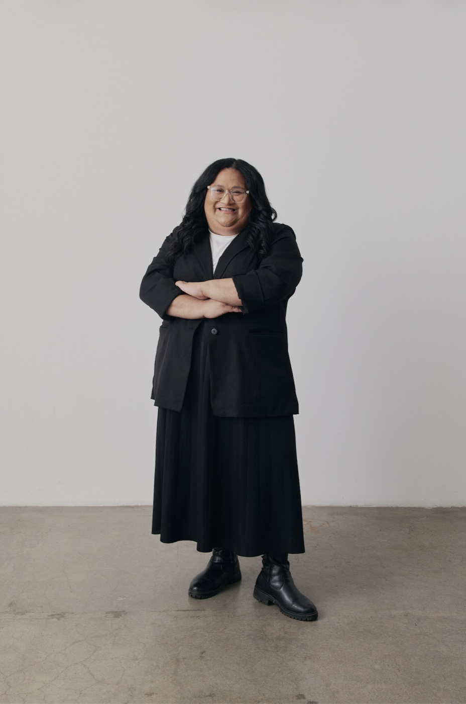
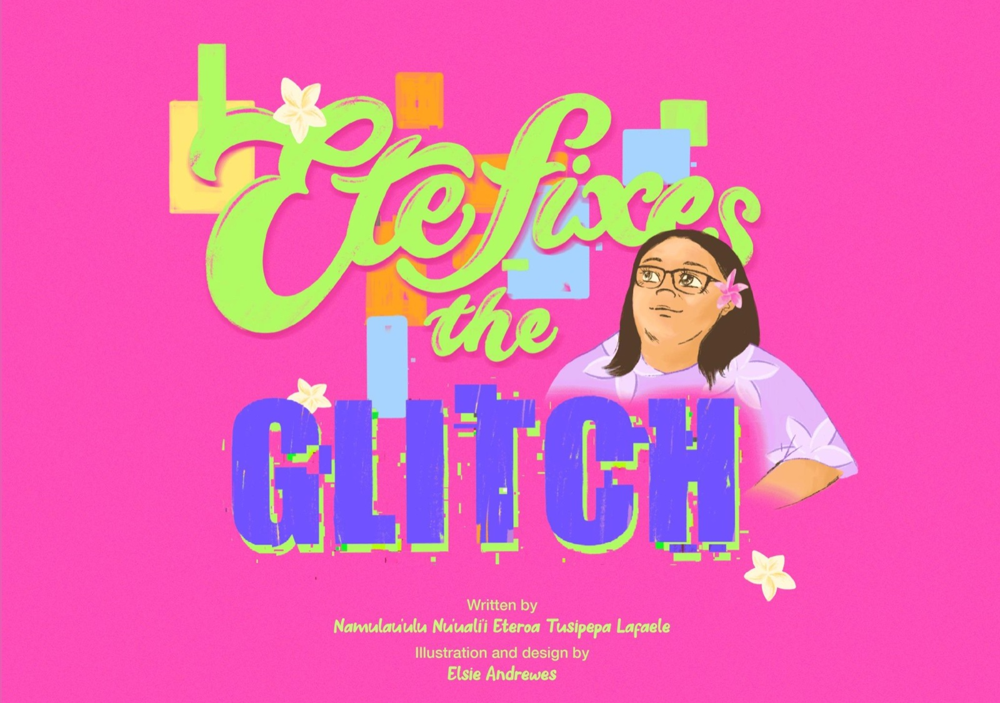

Teine o le Tumua mai Aana
Advancing digital equity and artificial intelligence capability across Aotearoa New Zealand and the Pacific — ensuring Pacific communities are not just consumers of technology, but builders, creators, and leaders.

Eteroa brings a rare combination — deep technical fluency, cultural grounding, and the kind of presence that changes the room.
— Placeholder quote · replace with a real endorsement
Born and raised in Cannons Creek, Porirua, Eteroa hails from the villages of Fogapoa, Leulumoega Tuai, and Tafagamanu Lefaga in Samoa — where her commitment to service and community leadership first began.
She studied Computer Science and began her career as a Software Engineer, building a strong technical foundation that now underpins her work in emerging technologies. Today she leads across three intersecting worlds: AI education, Pacific community advocacy, and the boardrooms shaping how technology is built in Aotearoa.
She is co-founder of Fibre Fale, author of Ete Fixes the Glitch, and holds the matai titles Namulau'ulu and Nu'uali'i.
Featured film · YouTube
Leading AI education programmes that are culturally grounded — making artificial intelligence accessible, practical, and led by Pacific voices.
Building digital products and tools rooted in community need — a software engineering background applied to solving real problems for real people.
Creating pathways for the next generation of Pasifika technologists — through Fibre Fale, mentorship, and the belief that our communities deserve to lead.
Bringing energy, warmth, and cultural authenticity to events of all sizes — from intimate community gatherings to large-scale conferences.
Technical deep-dives into AI and emerging tech, motivational talks on purpose-led leadership, and good-vibes sessions that leave audiences energised.

A children's book inspired by growing up in Cannons Creek — encouraging young Pacific people to see themselves as creators and problem-solvers in tech. Now on a mission to reach all 1,819 primary schools across Aotearoa.
Learn more